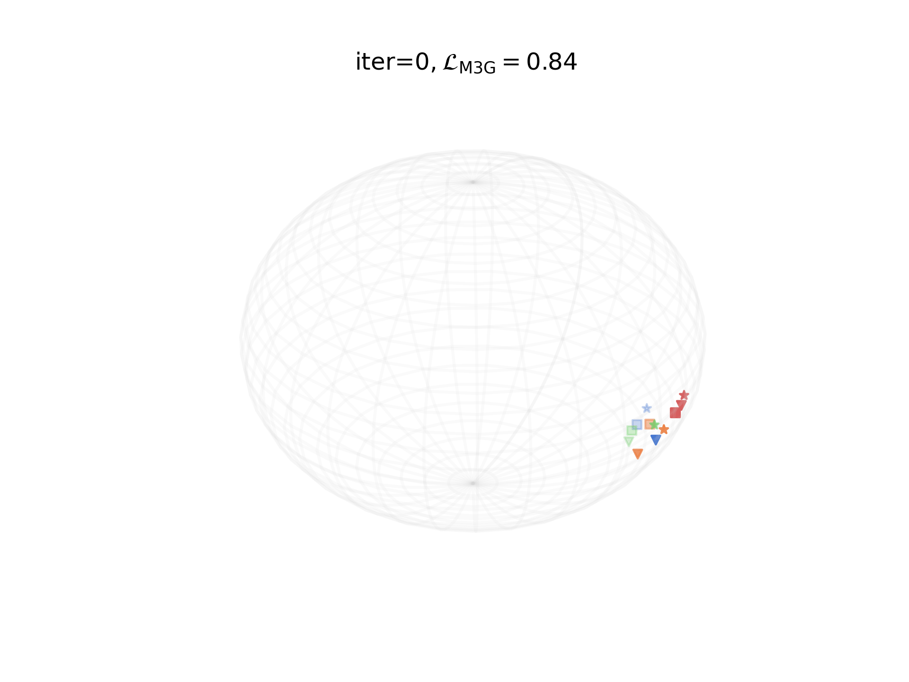

Gradient flows of $\rm{M3G}$ : The gradient flow of $\rm{M3G}$ when applied to a toy problem with $k=3$ for $n=4$ points in $d=3$ lying on the unit sphere.
Learning meaningful representations of complex objects that can be seen through multiple ($k\geq 3$) views or modalities is a core task in machine learning. Existing methods extend the InfoNCE loss, typically considered for paired views ($k=2$), either by instantiating $\tfrac12k(k-1)$ InfoNCE pairs, or by using reduced embeddings, following a one vs. average-of-rest strategy. We propose the multi-marginal matching gap ($\rm{M3G}$), a radically different loss that borrows tools from multi-marginal optimal transport (MM-OT) theory. Given $n$ points, each seen as a $k$-tuple of embeddings, our loss contrasts the cost of matching these $n$ ground-truth $k$-tuples, with the MM-OT polymatching cost, which seeks $n$ optimally arranged $k$-tuples chosen within $n\times k$ vectors. While the exponential complexity $O(n^k$) of the MM-OT problem may seem daunting, our experiments show that the MM-Sinkhorn algorithm can be run for $k=3\sim 6$ views. Additionally, and thanks to Danskin's theorem, getting the gradient of the $\rm{M3G}$ loss does not require a backward pass. Our experiments demonstrate performance improvements over multiview extensions of InfoNCE, for both self-supervised and multimodal tasks.